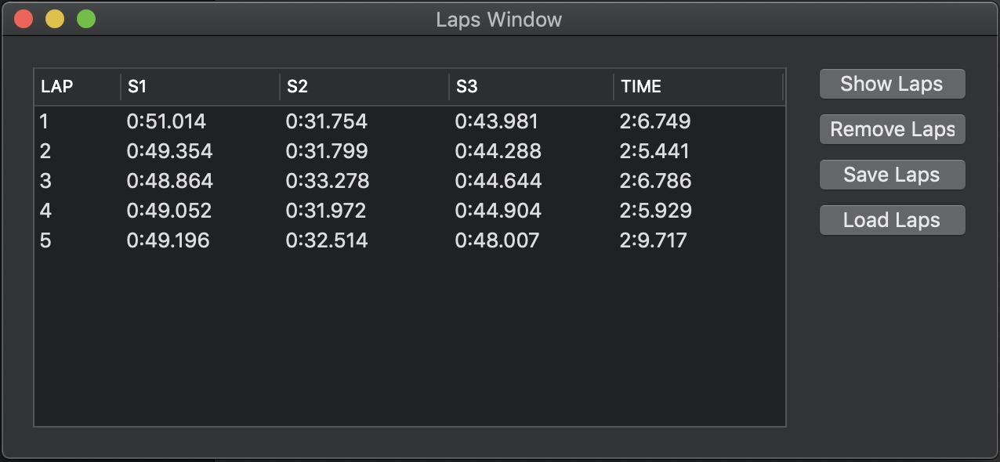

Rough Idea Project Cars 2 Laps Window.
Shows a list of laps completed, as you finish a lap the lap will appear in the left-hand side table. The table shows the Lap number, Sector times (1, 2 and 3) and the over all Lap time. You can also select multiple laps to be shown.
The Show Laps button will open a Lap Window for each selected lap.
The Remove Laps button only removes the selected laps from the table, if the lap has been saved the lap will still be available to load.
Save Laps button saves the selected laps, a window will appear requesting where and what name you would like to save the lap as.
Load Laps allows you to load any saved laps back to the Laps Window.